Engineering Intern · Mohawk Industries · Glasgow, VA · Summer 2026
Every roll of carpet leaving the tufting floor at Glasgow was wound to a length nobody could defend with data. The plant had been pushing roll size up since 2017 — from a 373 ft average to 614 ft — using a rule of thumb called "Make Rolls Big," because the equation that was supposed to do the job had drifted badly enough that a rule of thumb beat it. Over a summer I measured more than 500 rolls across 89 styles, rebuilt the length model from the roll geometry up, and replaced the legacy equation with one that predicts 86% of the variance instead of 73%. On identical production, it is worth two to three times what it replaced.
Glasgow opened in 1934 as Lee's and Sons Blue Ridge Mill, under a motto the plant still runs on: "Quality first, then yardage." It produces nearly all of Mohawk's carpet tile — millions of square yards and hundreds of styles a year, residential through commercial. Year to date during my internship the plant ran over 26.1 million feet of carpet, producing more than 17.4 million square yards of tile.
That scale is the whole reason this project is worth anything. A few feet per roll is invisible. A few feet per roll across every roll the plant winds for a year is a budget line.
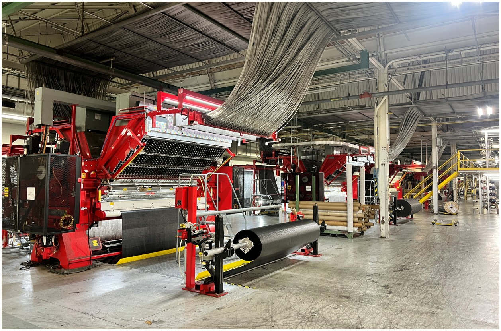
This was not a plant ignoring the problem. Glasgow had been working to maximize roll size since 2017 and had improved every year — average roll length went from 373 ft in 2017 to 614 ft by the time I arrived. But the tool doing the work was the "Make Rolls Big" model, a heuristic the floor trusted precisely because it outperformed the TDAS equation that was supposed to be the authority.
A heuristic has a ceiling, and the ceiling is that it treats styles as interchangeable. They aren't. Face weight, stitch rate, thickness and backing all change how much carpet fits inside the same physical envelope, and none of that reaches a single flat number.
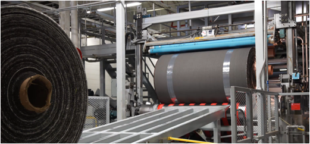
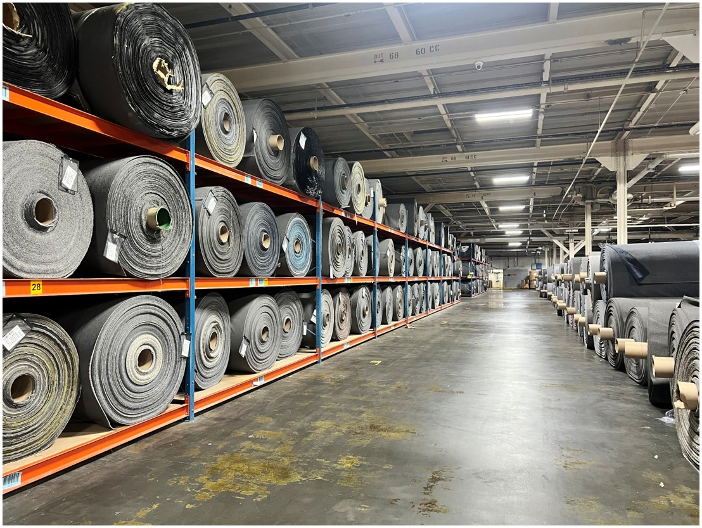
Before modeling anything I had to establish what actually stops a roll from growing. Rack height and tufting machine limits both matter, but neither is the real cap — the binding constraint is precoat roll-up.
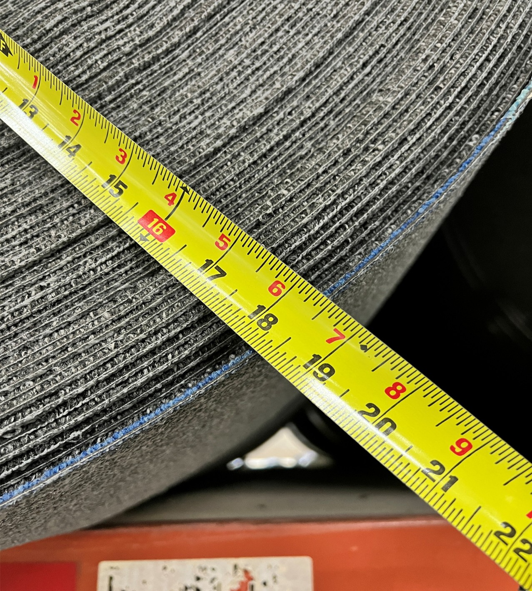
With the envelope fixed, length becomes pure geometry. The wound carpet occupies the annulus between the core and the maximum radius; that usable area divided by the thickness of one wrapped layer gives the length.
Max Length divided by Thickness is a hyperbola — awkward to regress, badly behaved at the thin end, and it produces non-constant residual variance. Taking the reciprocal fixes all of that at once, and a higher Inv_T simply means a thinner layer and a longer roll.
The payoff I cared about most was maintainability. Because the relationship is linear in Inv_T, future iterations can be run rapidly with the same equations and the same dataset — without resampling and recalculating. If the core size, the rack height, or the roll-up allowance changes, K changes and everything downstream follows from a cell reference. That is what makes this a tool rather than a one-time study.
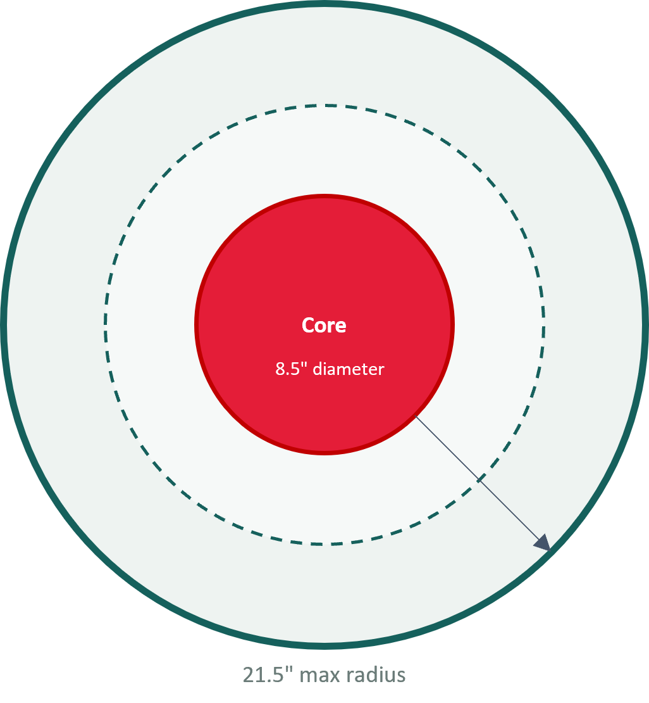
Each roll measured at the 4 and 8 o'clock positions with a tape, from core edge to outer edge — averaging out the ovality a roll picks up resting on its side.
Roll number and averaged radius logged in Excel; Inv_T computed from the geometry.
Style, actual length, face weight and SPI pulled from SEQUEL and matched to each roll.
One data discipline point that mattered more than it sounds: production length came from the precoat production length column, which is always populated, rather than tag length, which frequently is not. Using tag length silently drops rolls out of the dataset, and the rolls it drops are not random.
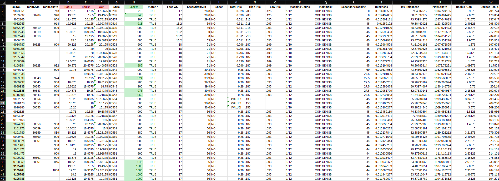
| Variable | Units | What it measures |
|---|---|---|
| Face Weight | oz / yd² | Ounces of fiber in one square yard. Higher face weight means more yarn and more thickness. |
| Stitch Per Inch | lengthwise | Density of tufts woven in a one-inch row. Higher density is more durable but harder to compact. |
| Pile Height | in, free-standing | How tall the tufts stand above the primary backing. Some styles are flat overall; others rely on variation to build texture. |
| Gauge | needles / in | Needle spacing across the width (1/12 = 12 needles per inch). Over 88% of production was 12th gauge. |
| Backing Type | — | The fabric the tufts are woven through. Non-woven and woven styles behave differently in sampling; 91% was non-woven. |
The gauge and backing concentrations are what made a single general equation defensible. When 88% of production shares a gauge and 91% shares a backing family, splitting the model across those factors buys noise, not accuracy.
With face weight, SPI and pile height all in play, I went after a sharper measurement and started taking readings with a manual thickness gauge. The motivation was concrete: a textured style with peaks and valleys can log the same free-standing pile height as a consistently flat one, but the two compress completely differently on the drum. A measured thickness separates them where pile height cannot.
It improved the equation. It also turned out that measured thickness is ~96.7% collinear with face weight (r = 0.967, 95% CI 0.922–0.986), which means most of what it contributes was already sitting in a column I could pull from SEQUEL for free.
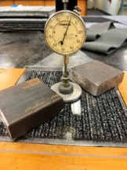
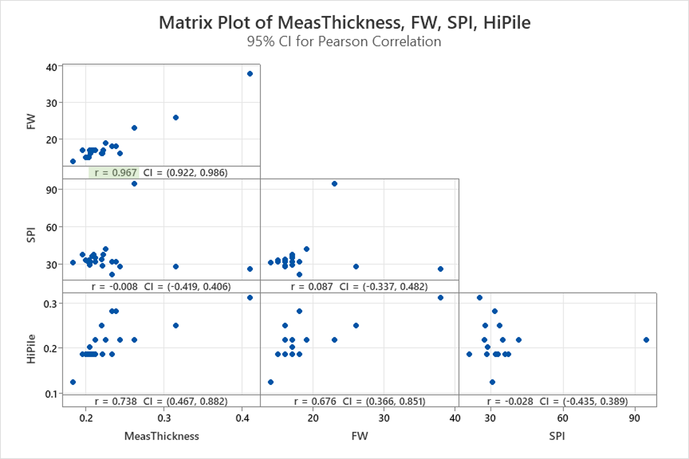
A model that only lives in Minitab does not convince anyone on a tufting floor. Over the summer I tracked more than 75 rolls run longer than 900 ft, processing the requests and measuring the results after precoat.
The largest request I processed was a roll of 83103 run to 1,075 ft — 175 ft longer than that style's normal run. It came off the line at a 19.625″ radius, meaning even at 1,075 ft there was still another 200 ft of headroom before the 21.5″ ceiling. And it was only the 12th largest roll the plant made that year.
| Rank | Style | Footage | Note |
|---|---|---|---|
| 1st | 80498 | 1,370 ft | — |
| 2nd | 83122 | 1,182 ft | — |
| 3rd | 83154 | 1,158 ft | — |
| 12th | 83103 | 1,075 ft | My largest processed request — 200 ft of radius still unused |
That leaderboard is the argument in a single table. Rolls well past 1,000 ft were already being made successfully and routinely. The capability was clear and present; what was missing was a defensible way to decide which styles could do it and by how much.
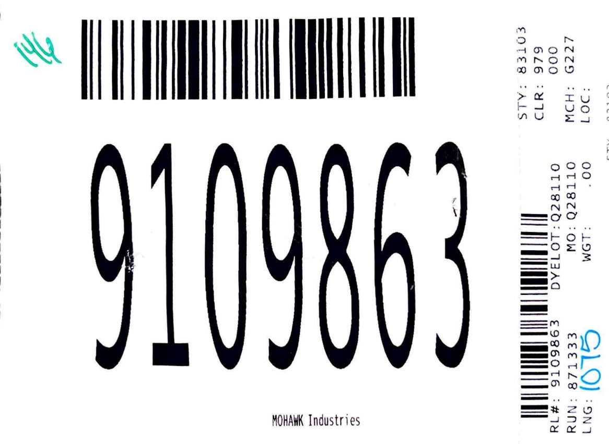
This is the part that turns an interesting regression into a number you can actually wind to. It runs in the standard order — prove the process is stable first, then measure how much of the tolerance it consumes.
An Individuals and Moving Range chart confirms the process is in statistical control before capability is assessed. The Individuals chart tracks the process average for shifts and trends; the Moving Range chart plots the difference between consecutive points, capturing short-term variation. Capability computed on an unstable process is meaningless — it describes a distribution that is not holding still.
There is no meaningful lower specification here. A slightly short roll is a minor loss. The only limit worth defending is the upper one, so the specification is set as an upper bound on thickness derived from the candidate target footage:
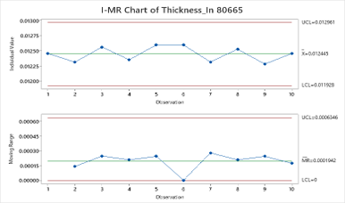
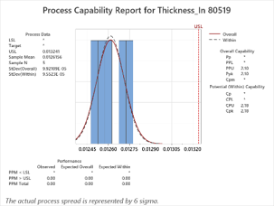
Where Ppk and Cpk diverge sharply, the gap is itself the finding: it means the style's sample was dominated by rolls from one or two production orders, so between-order variation is being understated. Those styles needed more diverse sampling before confirming a target — not a target anyway.
The final form is exponential in face weight, fitted on the log scale so the model is linear where it is estimated and multiplicative where it is used. That structure is also what makes it extensible — additional predictors drop into the exponent without changing anything around them.
Predicted R² of 85.6% against an adjusted 86.1% is the number I was most pleased with. Those two figures staying within half a point of each other is the evidence that the model generalizes to rolls it has never seen, rather than having memorized the sample — which is exactly the failure mode that left the legacy equation drifted.
Both published equations, evaluated side by side. Drag face weight to see where the legacy TDAS equation was giving away footage and where it was quietly inviting splits.
The two equations cross at a face weight of about 29.5 oz/yd². Below that the legacy equation under-predicts and the plant loses footage on every roll; above it the legacy equation over-predicts, which is the expensive direction — that is where a split comes from. A single drifted exponential cannot be wrong in only one direction, which is precisely why "Make Rolls Big" outperformed it in practice. The Big Ones offset is the margin by which the general equation conservatively under-predicts confirmed large-roll styles.
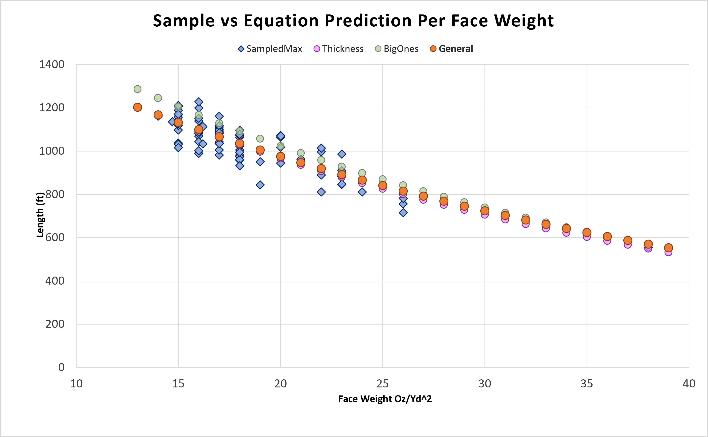
This is the part I had to get right, because the intuitive version of the argument is wrong. Longer rolls do not create carpet. The savings come from somewhere more specific.
Backing changes force a short roll at a fixed cumulative yardage, and that break lands at the same point no matter how long the individual rolls are. Between breaks, the same footage repacks into fewer, longer rolls — and every roll eliminated takes its core, its wrap, its handling moves and its rack slot with it.
Identical output, identical break point, one fewer roll — and the stub roll at the end goes from a 350 ft runt to a near-full 890 ft. The 6% reduction in rolls per year is this diagram, repeated across the plant's production.
Run against identical production on the same sample set, the new equations are worth two to three times the model they replaced:
Annual savings by equation, identical production and sample set.
| Equation | 24″×24″ tiles | 12″×36″ tiles | Labor | Total | Rolls | CO2 reduced |
|---|---|---|---|---|---|---|
| Standard | $22,600 | $12,700 | $9,500 | $44,800 | −6% | 30.9 t |
| Big Ones | $31,900 | $19,700 | $13,700 | $65,300 | −9% | 45.1 t |
Swap the legacy length equation for the new form, then run one maximum roll per order at the calculated length and measure each after precoat.
With additional high-length data across a wider slice of the product mix, refit the regression and re-derive the safety factor from the observed fit.
Primary backing already ships on 5″ cores. Minor precoat retrofitting could cut the need to order 8.5″ cores entirely.
Deploy the final equation plant-wide and measure realized savings against the projection.
Going from an 8.5″ core to a 5″ core shifts K from 14.0717 to 14.33 — a bigger usable annulus for free. That gains roughly 13–21 ft per style across the face weight range and saves an additional $5.8K in reduced seam waste alone. Because the model is linear in Inv_T, absorbing that change is editing one constant, not rerunning the study. This is the maintainability argument paying off in the most direct way possible.
The roll project was the main assignment, but two other pieces of work took up real time over the summer, and both ended up being things I'd point to first in an interview.
I helped convert, document and digitize over 100 LOTO procedures for tufting equipment — the step-by-step energy isolation instructions that keep someone from being killed by a machine that restarts while they're inside it. Unglamorous, entirely procedural, and the single most direct contribution I made to making Glasgow a safer place.
I partnered with Maintenance to quantify the savings from slowing large supply fans with a variable frequency drive rather than running them flat out continuously. This is a fan affinity laws problem, and the cube relationship between speed and shaft power is what makes the answer so lopsided:
| Speed | Airflow | Shaft power | Power reduction |
|---|---|---|---|
| 100% | 100% | 100% | — |
| 90% | 90% | 72.9% | 27.1% |
| 80% | 80% | 51.2% | 48.8% |
| 70% | 70% | 34.3% | 65.7% |
| 60% | 60% | 21.6% | 78.4% |
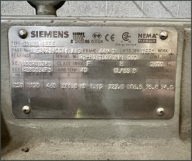
I would have found the binding constraint in week one instead of week three. I spent early time characterizing rack height and tufting machine limits before establishing that precoat roll-up was the actual ceiling. Every measurement taken before that was answering a question that didn't govern the outcome.
I would also structure the sampling around production orders rather than rolls. Several styles showed large gaps between Ppk and Cpk purely because their sample was dominated by rolls from one or two orders, which understates between-run variation and makes capability look better than it is. Ten rolls from ten different orders is worth more than thirty rolls from three.
The thickness gauge work is the result I'm most ambivalent about and most glad I did. It consumed real hours and ended as a negative finding — 96.7% collinear with a number already in the spec system. But an unanswered "we should measure thickness someday" would have sat in the plant's backlog indefinitely, and now it doesn't.
| Area | Tools |
|---|---|
| Statistics | Minitab 22 — regression on the log scale, Best Subsets, I-MR control charts, Ppk/Cpk process capability, correlation matrix plots, Box-Cox and AIC/BIC model comparison |
| Data | SEQUEL (SQL) for tufting production, tufting specs, standard costs and precoat production pulls; TuftingSpecsPro for style specifications |
| Analysis & delivery | Python for regression, outlier detection and model comparison; Excel and LibreOffice for operator-facing workbooks |
| Measurement | Tape measure and manual thickness gauge on the production floor — 500+ rolls across 89 styles |
Summer 2026, Mohawk Industries, Glasgow VA — Tufting. Presented at Mohawk Intern Expo 2026.